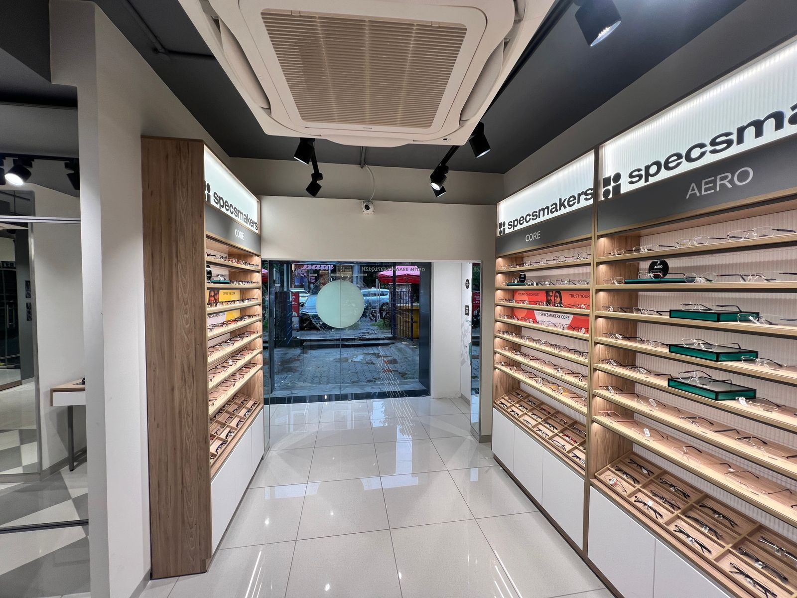
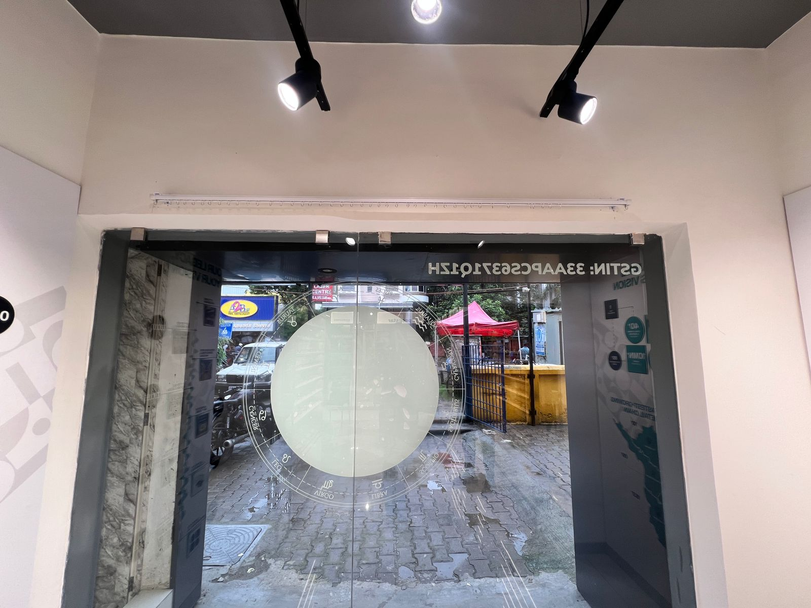
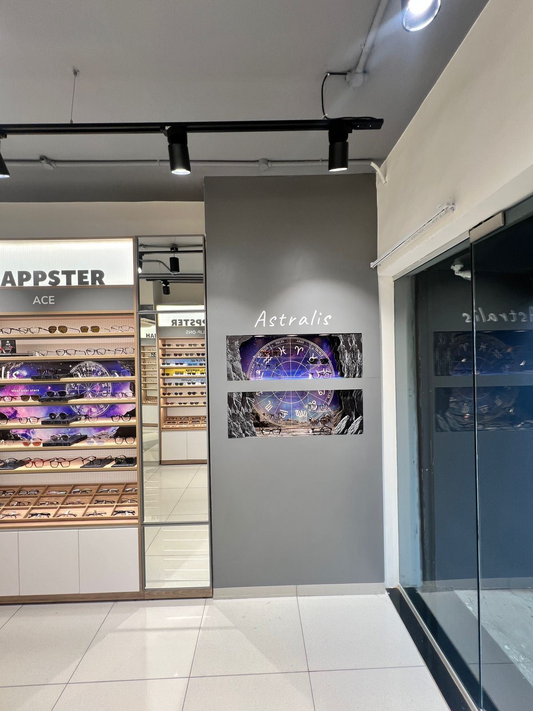
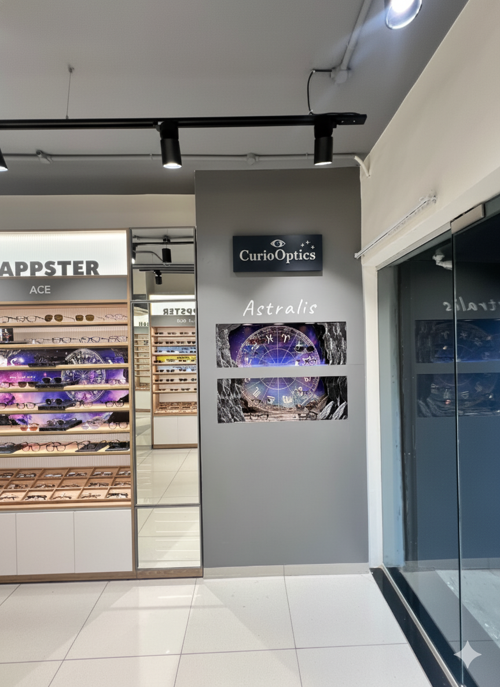
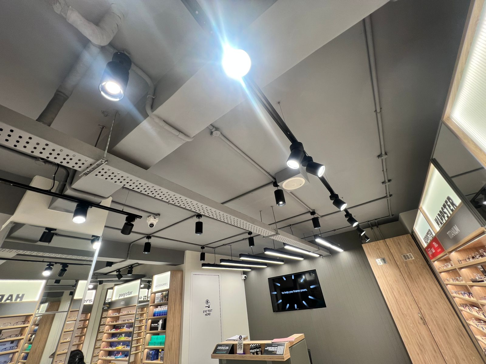
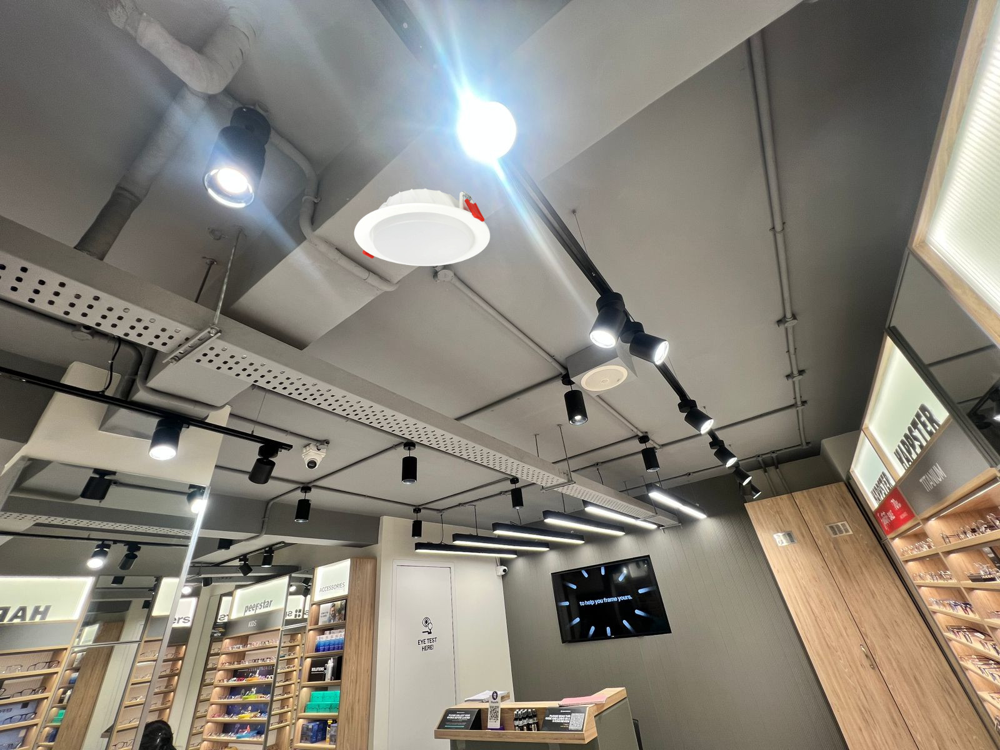

Besant Nagar Store Visit Report
Comprehensive Store Inspection & Analysis
Date: 28th October 2025
Report Summary
Store Overview: The store inspection was conducted to assess overall operations, visual merchandising, customer experience, and compliance with brand standards.
Key Observations: The store demonstrates strong potential with several areas performing well. While my visit Audit was in progress and so dislay for a new store was not looked in detail.
Overall Assessment: The visit revealed both strengths and areas requiring attention - though very less. Immediate action on the identified improvement areas will significantly enhance store performance and customer satisfaction.
Detailed Analysis
1
Window Display & Entrance


Observation: The current facade is a major uplift from the previous store design. the store is lit good but the ambient lighting could be imporved, the cash counter is very spacious. the audio and the fragrance dispenser adds to the overall experience. The entrance is inviting but could benefit from more dynamic elements to attract foot traffic.
Recommendation: LED wall if possible at the entrace or a display element which is animating to draw attention.
Recommendation: LED wall if possible at the entrace or a display element which is animating to draw attention.
2
Focal Nesting Table


Observation: Product displays at the focal are good the nesting table but can also be looked for more wrapping to give a completedness.
Recommendation: Full vinyl wraping as per the campaign's Key Visuals and brand elements.
Recommendation: Full vinyl wraping as per the campaign's Key Visuals and brand elements.
3
Glass back


Observation: This area is very empty.
Recommendation: there can be point of interests which are very visible when browsing, else becoming a dead area at the store.
Recommendation: there can be point of interests which are very visible when browsing, else becoming a dead area at the store.
4
Campaign wall


Observation: The Campaign wall is an interesting addition but there seems to be a lack of communication, a signage can be added to give more room for the customer to understand the campaign better.
Recommendation: Light a curios optics kind of section header to create a curiousity corner and this changes as per campaign.
Recommendation: Light a curios optics kind of section header to create a curiousity corner and this changes as per campaign.
5
Ambient Light


Observation: The Ambient light now is better than before but can be further improvised.
Recommendation: It can be further improved with the use of downlight which spreads more across the Ambiance like in the image.
Recommendation: It can be further improved with the use of downlight which spreads more across the Ambiance like in the image.